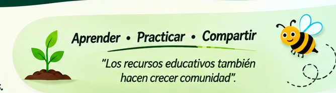

Para estudiantes
Materiales para practicar, repasar y aprender a tu propio ritmo.
Este espacio reúne materiales didácticos, ejercicios, programas y herramientas digitales para apoyar el aprendizaje de Matemáticas, Programación y otras áreas del conocimiento.
Explora los recursos disponibles y utilízalos para estudiar, practicar y desarrollar nuevas habilidades.

Apuntes, ejercicios,
guías y evaluaciones.
Programas, ejemplos,
módulos y prácticas.
Materiales de apoyo
para diferentes áreas.
Aplicaciones y recursos
útiles para el estudio.
Planeaciones, formatos
y documentos de interés.
Ideas, ejemplos y recursos
para desarrollar proyectos.
No hay recursos que coincidan con la búsqueda.
Materiales para practicar, repasar y aprender a tu propio ritmo.
Recursos de apoyo para planear, enseñar y compartir experiencias.
El Banco de Recursos Educativos es un espacio para reunir materiales didácticos, herramientas digitales y proyectos que apoyen el aprendizaje. Su contenido crecerá con nuevas aportaciones y experiencias.
¿Cómo encuentro un material? Puedes elegir una categoría o utilizar el buscador de recursos.
¿Puedo abrir los materiales desde el celular? Sí, el portal se adapta a pantallas pequeñas.
Próximamente reuniremos aquí sitios y herramientas útiles para el aprendizaje.